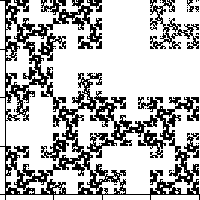

| 10. This fractal consists of | |
| 3(1/2)d + (1/4)d = 1 | |
| Substituting x = (1/2)d yields | |
| x2 + 3x - 1 = 0 | |
| Keeping in mind that x must be positive, we see | |
| x = (-3 + sqrt(13))/2 approximately 0.303 | |
| So d = Log(x)/Log(1/2), approximately 1.724. | |
|  | |
Return to Homework 4 Practice.